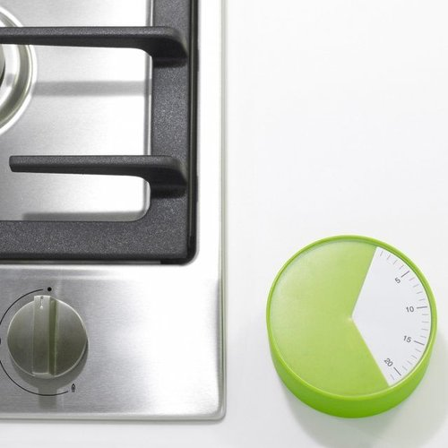
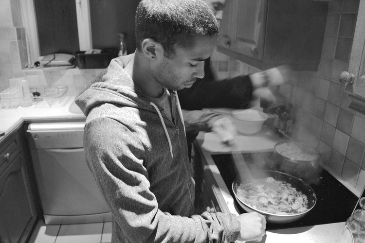
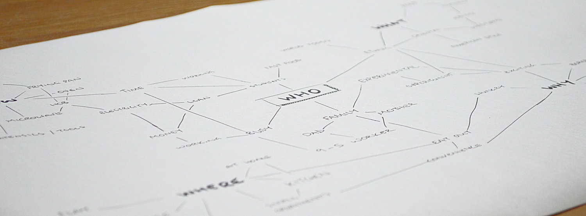
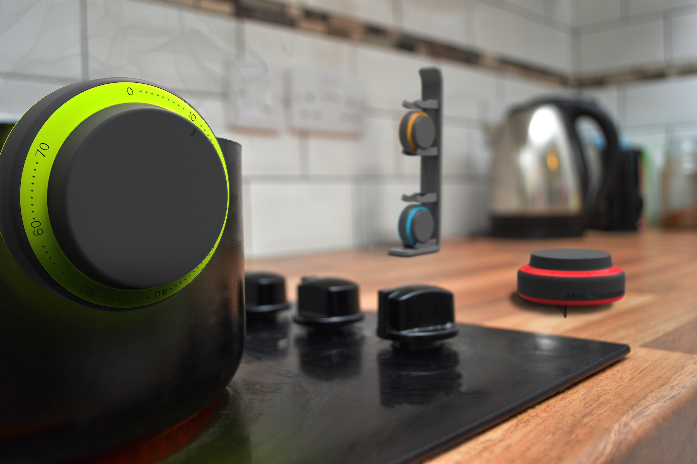

Timely
Product Design Student - 3yrs
Loughborough University holds a unique module (design week) where successful brands set a design brief with a deadline of one week.
The Problem
Their problem was that people order convenience food because they don't have the time to prepare meals for themselves.
The companies judge our ability to apply a balanced and appropriate design process for the problem and our design communication skills.
Research
The kitchen ware industry boasts many task specific time saving products. Silicon is a favoured material due to its robust nature and attractive colours.
I phone interviewed a chef to identify products or practices that weren’t typically available to the public.
Insights
In order to fully empathise with the person cooking, I observed different people cooking various dishes and then also took it upon myself to cook for all my housemates.
I found that an inability to effectively track cooking and preparation times for different foods resulted in wasted time.
Design
Using this insight I solved the problem by introducing a set of timers that could easily be assigned to individual cooking tasks.
I took advantage of the markets use of attractive colours yet applied them logical use cases. This also helps distinguish between the task and time.

The product was simple and incorporated a bought in timer component to reduce costs.
Result
I was awarded 3rd prize and £200 for my design.
Takeaways
This was the first time I made use of user observation and it has changed my understanding of products and the way I approach design. That is why I like this project so much.
Other work